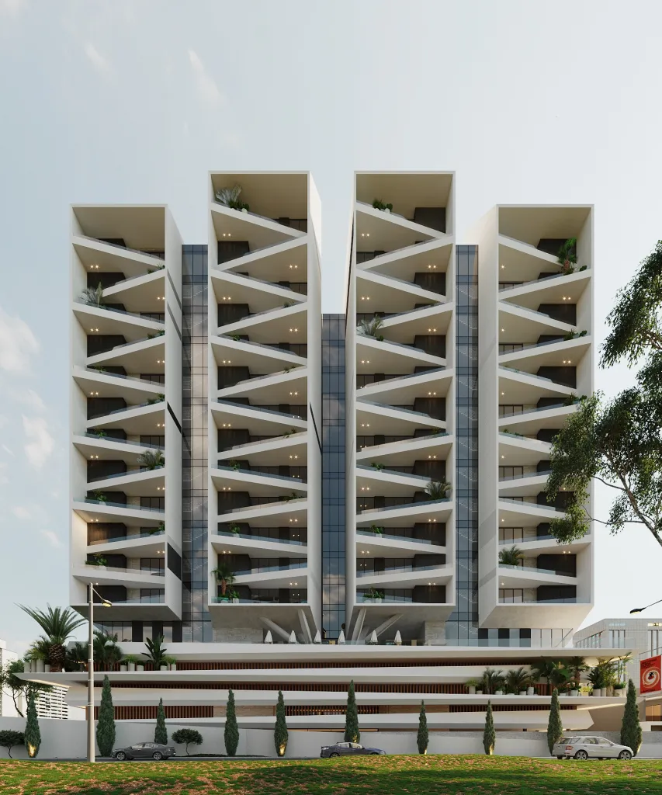
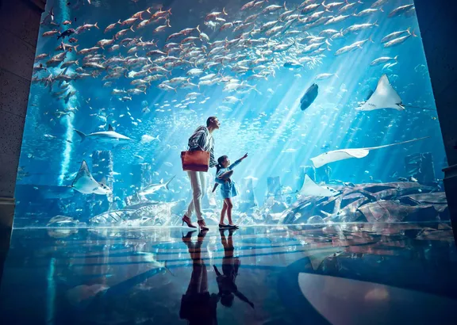
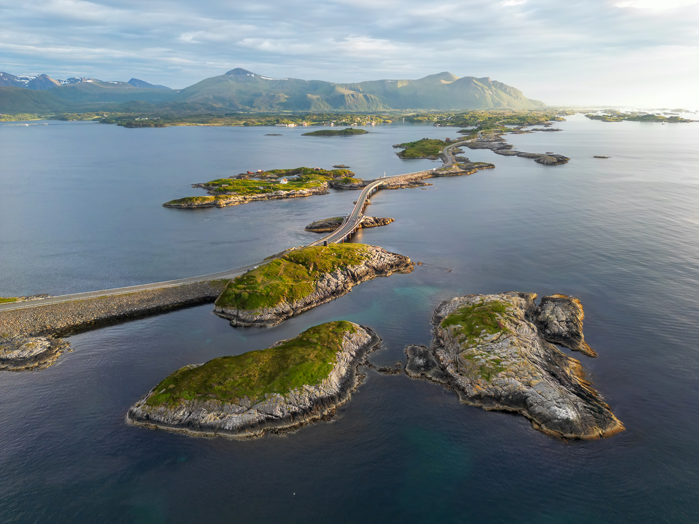
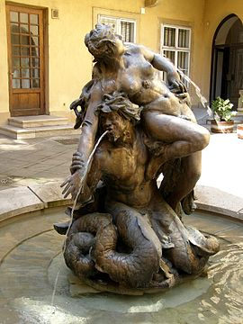
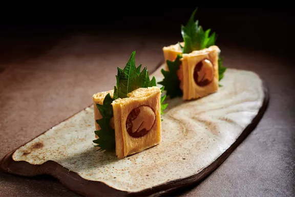
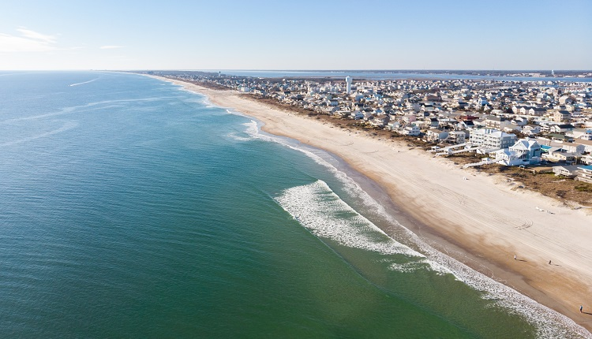
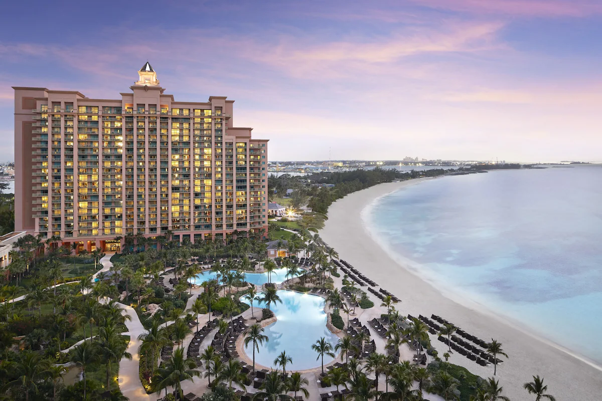
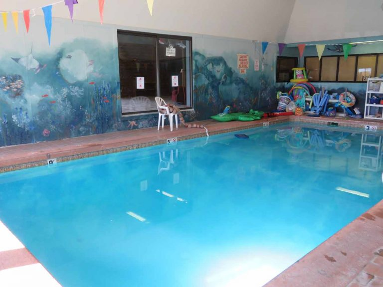

In the very stunning and timeless landscape of Victoria Island at Bishop Aboyade Cole Street, Atlantis City Towers is in a strategic position. The iconic Condos development is to provide our investors and home buyers the opportunity to invest in our properties with unbelievable annual interest rates and also provides buy-to-rent clients appreciable properties with unrivalled annual rental returns on their investments at prime locations. Each serviced tower consists of premium 1,2,3-bedroom condos and 2,3,4-bedroom maisonettes, as well as a luxury 5-bedroom penthouse with BQ, each residential condo is fitted with large en-suite bedrooms, study room, spacious living and dining areas, large windows for sufficient ventilation and lighting, a lovely kitchen, and suspended swimming pool.
For thousands of years, people have been searching for the lost city of Atlantis. Discover mysteries of the deep and learn fascinating facts about marine life while you watch 65,000 marine animals swim in the Ambassador Lagoon. Take a behind the scenes tour or dive into the depths with an aquarium experience. These unique aquarium programmes allow guests to delve deeper into the fascinating world of these precious animals while gaining insight into how we look after them. We strive to build an enduring connection with marine life and to encourage greater pro-nature conservation behaviours.
The Atlantic Ocean Road or the Atlantic Road (Norwegian: Atlanterhavsvegen / Atlanterhavsveien) is an 8.3-kilometer (5.2 mi) long section of County Road 64 that runs through an archipelago in Hustadvika and Averøy municipalities in Møre og Romsdal county, Norway. It passes by Hustadvika, an unsheltered part of the Norwegian Sea, connecting the island of Averøy with the mainland and Romsdalshalvøya peninsula. It runs between the villages of Kårvåg in Averøy and Vevang in Hustadvika. It is built on several small islands and skerries, which are connected by several causeways, viaducts and eight bridges—the most prominent being Storseisundet Bridge..
Mermen, the male counterparts of the mythical female mermaids, are legendary creatures which are human from the waist up and fish-like from the waist down, but may assume normal human shape. Sometimes they are described as hideous and other times as handsome.
Nobu restaurant, located on the iconic Palm Jumeirah, has been selected as one of the best restaurants in Dubai by the MICHELIN Guide. The restaurant offers a world-renowned Japanese cuisine with a Peruvian twist for a culinary experience like no other. Expect an elevated Nobu Dubai experience with the stunning views of the Palm and Dubai Marina skyline. Indulge in celebrity chef Nobu Matsuhisa's iconic black cod miso, premium wagyu beef tacos with a Japanese twist, and Dubai's best sushi
The perfect location, to combine business with pleasure in the heart of the tourist centre on a superb beachside location. Excellent standards of accommodation with the freedom of relaxation. The Atlantica Miramare beach is ideally located on the beachfront, overlooking the blue waters of the Mediterranean Sea only 5km away from the old Limassol town centre. It is a contemporary hotel beautifully decorated that whispers class.
Located in Paradise Island, The Reef at Atlantis is next to a golf course and on a private beach. Fort Montagu and Nassau Public Library are local landmarks, and the area's natural beauty can be seen at The Retreat Garden National Park and Lucayan Archipelago. Travelling with kids? Consider Aquaventure, or check out an event or a game at Haynes Oval. With scuba diving, parasailing and surfing/body boarding nearby, you'll find plenty of adventures in the water.
Although the club specialized in transforming young guests into “mermaids” it teaches swimming to persons of all ages, from toddlers to octogenarians. The theme of this multi walled mural was chosen by the business owners to illustrate being in an underwater Atlantis in the cooler and deeper Atlantic ocean. The mural includes mermaids, whales, a sting ray, jelly fish, a dolphin, sea turtles and numerous fish. A “pirate ship” play area is built into one corner of the pool area. The underwater theme is carried to the downstairs party area where the walls and ceiling give the appearance of being in a sunken ship
